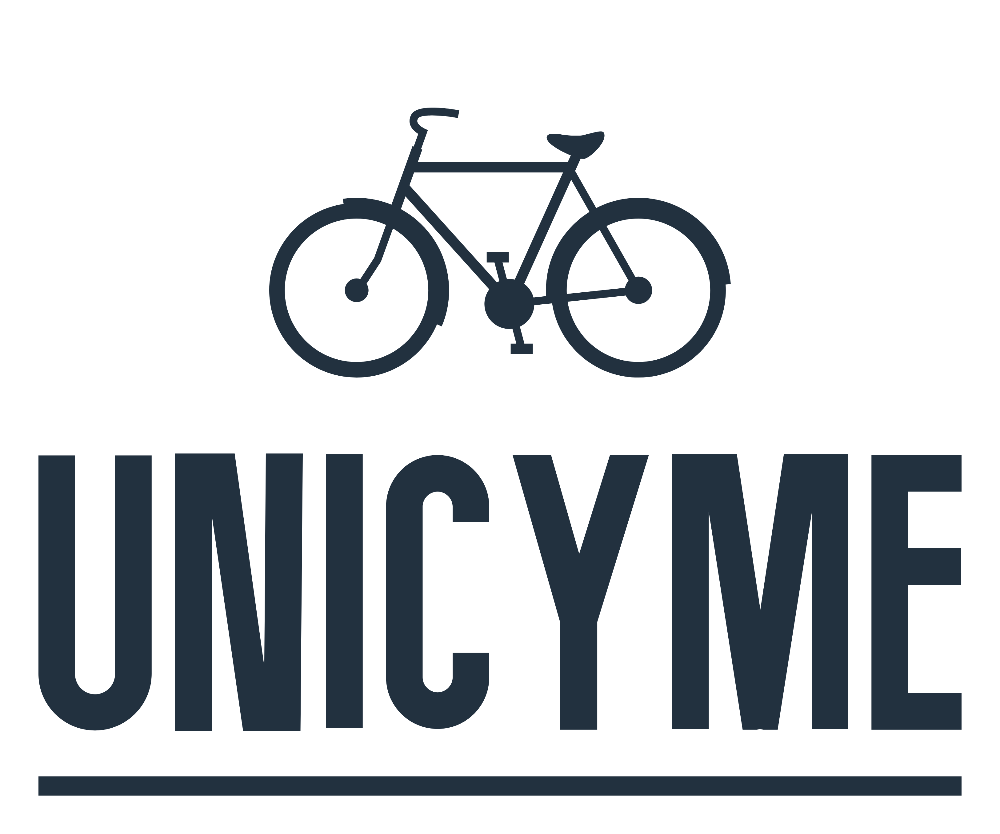

Check out the monthly and yearly subscription, and corresponing payment plans from the UniCyme-How It Works page.
UniCyme is prepaid-based on the amount of cash in your Amrita CMS E-Wallet.
Use the Statistics button in the Home Page, to view cycle availability in respective hotspots, user leaderboard.
We are working on creating a chat bar, nonetheless you have the Instagram Handle on the page.
Yes! We have 2 seasons with different challenge leveled events.
No UniCyme doesn't support that.
The query bar in the future might help. For now you can approach Accounts Department AB1 for guidance.